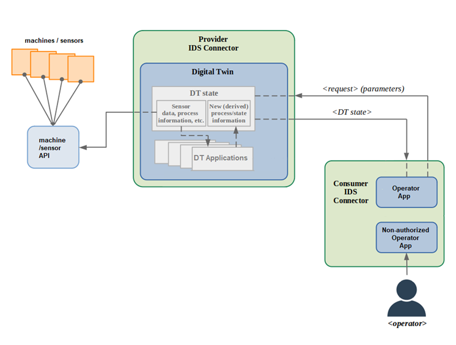

Name
Trusted Factory Connector (IDS)
Defined in Task
n/a
Short description
The Trusted Factory Connector is based on the AISEC Trusted Connector and is the central gateway to the IDS network. It is based on the German standard, DIN SPEC 27070, which in general describes security gateways. The IDS enable companies to share data across company borders without losing data control. Our use-case includes sharing of critical factory data to mediation platforms in order to realize new business ideas.
Example of usage

Interfaces
IDS connectors usually only communicate with other IDS connectors. For this, the IDS Information Model is used. To connect Apps to the Connector, REST is used, in our case the AAS REST API. Users are usually interacting with graphical interfaces in those apps.
Subordinates and platform dependencies
The Connector is deployed with Docker. Natively the connector is written in Java.
License
The Connector is open-source and free for use. The integrated Usage Control solution MYDATA however is only free for research. Production users will have to license this solution.
TRL
TRL 6 – prototypes have been used in demo factories
References
To be considered in particular for the following COGNITWIN pilots
Sidenor